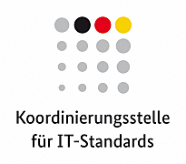

Einführung |
 |
1. Welchen Zweck hat dieses Dokument?
Dieses Dokument soll Hilfestellung bei der Bewertung von Normen und Spezifikationen anhand des Gemeinsamen Bewertungsverfahrens für Normen und Spezifikationen ( Common Assessment Method for Standards and Specifications, CAMSS) geben1. Hauptziel von CAMSS ist es, mithilfe eines neutralen und ergebnisoffenen Verfahrens für die Bewertung technischer Spezifikationen und Normen im IKT-Bereich Interoperabilität zu erreichen und eine Anbieterabhängigkeit (vendor lock-in) zu vermeiden. Dieses Verfahren ist in Einklang mit der Verordnung (EU) Nr. 1025/2012 zur europäischen Normung.
CAMSS ist der europäische Leitfaden für die Bewertung und Auswahl von Normen und Spezifikationen für E-Government-Vorhaben, der beim Aufbau einer Architektur und zur Begründung der Entscheidung für bestimmte Normen und Spezifikationen im Hinblick auf Interoperabilitätserfordernisse und -anforderungen herangezogen werden kann. Das Verfahren steht ganz im Einklang mit der Verordnung (EU) Nr. 1025/2012.
Nach dem Lesen dieses Dokuments werden Sie
-
verstehen, was die CAMSS-Bewertung nach dem EIF-Szenario ist und wie eine solche Bewertung durchgeführt werden kann,
-
wissen, welche Angaben je Szenario erwartet werden, um die Norm oder Spezifikation richtig zu bewerten,
-
verstehen, welche Bedeutung die im Szenario festgelegten Kriterien und sein Anwendungsbereich haben.
Die von diesem Dokument erfasste CAMSS-Bewertung nach dem EIF-Szenario sowie die verschiedenen Komponenten der jeweiligen Version können hier abgerufen werden.